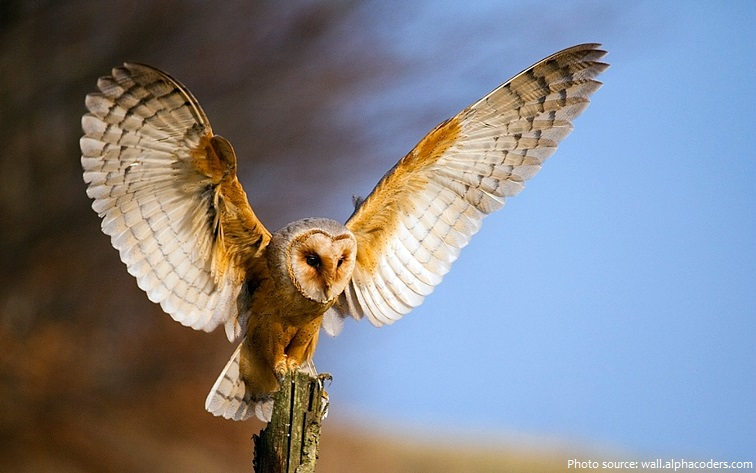

Barn Owl
Fossilized remains of the Barn Owl have been identified that date back 5.5 million years ago. The bone structure of them shows that the Barn Owl was more than twice the size back then as it is today.
- Scientific Name: Tyto alba
- Wingspan: 30in - 43in
- Average Lifespan: 4 Years
- Label: Rough grasslands with large rodent populations.
Barn owls fly silently, are nocturnal, have superb sight, and hearing and use all of these in combination to hunt small rodents. Barn owls screech rather than hoot. Listen to a barn owl's screech here.